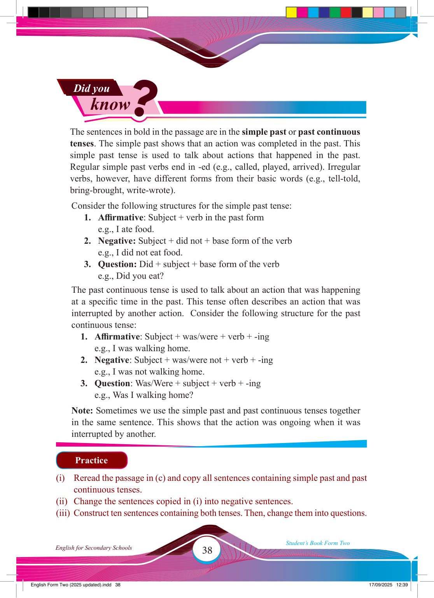

Did you
know
?
The sentences in bold in the passage are in the simple past or past continuous tenses. The simple past shows that an action was completed in the past. This simple past tense is used to talk about actions that happened in the past.
Regular simple past verbs end in -ed (e.g., called, played, arrived). Irregular verbs, however, have different forms from their basic words (e.g., tell-told, bring-brought, write-wrote).
Consider the following structures for the simple past tense:
1. Affi rmative: Subject + verb in the past form e.g., I ate food.
2. Negative: Subject + did not + base form of the verb e.g., I did not eat food.
3. Question: Did + subject + base form of the verb e.g., Did you eat?
The past continuous tense is used to talk about an action that was happening
at a specifi c time in the past. This tense often describes an action that was
interrupted by another action. Consider the following structure for the past continuous tense:
1. Affi rmative: Subject + was/were + verb + -ing e.g., I was walking home.
2. Negative: Subject + was/were not + verb + -ing e.g., I was not walking home.
3. Question: Was/Were + subject + verb + -ing e.g., Was I walking home?
Note: Sometimes we use the simple past and past continuous tenses together
in the same sentence. This shows that the action was ongoing when it was
interrupted by another.
Practice
(i) Reread the passage in (c) and copy all sentences containing simple past and past continuous tenses.
(ii) Change the sentences copied in (i) into negative sentences.
(iii) Construct ten sentences containing both tenses. Then, change them into questions.
17/09/2025 12:39